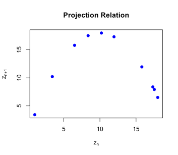

In the previous section, we considered a recursive formula for the new population in terms of the per capita net growth rate, \(r(P)\text{,}\) where the new population is computed by the difference equation
The basic idea to the difference equation is that \(r(P) \cdot P\) is the formula for the increment of change in the population, which is why that formula is added to the previous population.
In this section, we introduce an alternative way of thinking about computing the new population. In the above model, we effectively were thinking about the change in the population as a function of the previous population (specifically by thinking of the per capita rate as a function). We turn our attention now to thinking of the new population as itself being a function of the previous population. This function is called the projection function.
Subsection2.4.1Projection Functions
A sequence \(x=(x_n)\) is defined recursively if you have a formula to compute \(x_{n+1}\) in terms of the value for \(x_n\text{.}\) Generally, we have an equation that is solved for the new value in the form of
The function \(f\) in this equation is named the projection function for the sequence because it allows us to project the next value of the sequence knowing the current value in the sequence.
Example2.4.1.
The difference equation \(x_{n+1} - x_n = r x_n\) with an initial value defines a sequence recursively. If we solve this equation for \(x_{n+1}\text{,}\) we get a function of \(x_n\text{:}\)
\begin{equation*}
x_{n+1} = x_n + r x_n = f(x_n).
\end{equation*}
The function being used, \(f(x) = x+rx = (1+r)x\text{,}\) is the projection function.
Example2.4.2.
In Calculus, Newton’s method to find the positive square root of any positive number \(a \gt 0\text{,}\) which is the positive solution to \(x^2-a=0\text{,}\) involves creating a sequence that satisfies the recursive equation
\begin{equation*}
x_n^2 - a + 2x_n(x_{n+1}-x_n) = 0.
\end{equation*}
Solving this equation for \(x_{n+1}\text{,}\) we find the equation that writes \(x_{n+1}\) as a function of \(x_n\text{,}\)
When thinking about models as approximating relationships between actual data, we find projection functions by looking at the relation given by the scatter plot of consecutive values of the sequence, \((x_n, x_{n+1})\text{.}\)
Example2.4.3.
The table below gives the values of a sequence \(z_n\) for \(n=0,\ldots,10\text{.}\) Analyze the data to find a reasonable projection function.
Table2.4.4.
\(n\)
\(z_n\)
\(0\)
\(1.00\)
\(1\)
\(3.42\)
\(2\)
\(10.21\)
\(3\)
\(17.99\)
\(4\)
\(6.50\)
\(5\)
\(15.80\)
\(6\)
\(11.95\)
\(7\)
\(17.32\)
\(8\)
\(8.37\)
\(9\)
\(17.52\)
\(10\)
\(7.82\)
Solution.
We start by creating a plot of the projection relation, corresponding to a scatter plot of points \((z_n,z_{n+1})\text{.}\) When \(n=0\text{,}\) we have \((z_0,z_1) = (1.0, 3.42)\text{.}\) The next few points are expressed below:
The resulting scatter plot from all of the available projection relation points given the data is shown below.

Figure2.4.5.
The figure strongly suggests the shape of a parabola so that the relation likely involves a quadratic formula. Using a computer to perform a regression to find the quadratic polynomial trend curve for these points, we find an equation
\begin{equation*}
y=0.007003 + 3.59705 x - 0.179759 x^2,
\end{equation*}
but our relation involved \((z_n,z_{n+1})\) rather than the usual variables \((x,y)\text{.}\) The constant term in this equation is small, and we can ask for a regression where that term is set to zero, which gives an alternative equation
The right way to do this would be to do a statistical hypothesis test on whether the constant term is significantly different from zero. However, we will keep things simple and just look at the graph and see if there appears to be a significant advantage in including the extra term. The figure below was generated to show both graphs with the data, even though it looks like only a single curve. Including the extra term has no significant impact in the model. We consider our sequence following the recursive formula \(z_{n+1} = f(z_n)\) using the projection function
In fact, the data were generated from a sequence with projection function \(f(x)=3.6x-0.18x^2\) with sequence values rounded to two decimal places.
Figure2.4.6.
Subsection2.4.2Fixed Points and Equilibria
An equilibrium represents a state of balance. For example, in chemistry, an equilibrium in a chemical reaction means that there is a balance between the reaction rates that create a chemical and those that use the chemical. It is not that nothing is happening, but that the creation and loss are perfectly balanced.
A population can also be in equilibrium if the sources of all growth in the population is exactly balanced by the sources of all loss. That is, the rate of birth and immigration in a population would need to be exactly balanced by the rate of death and emigration. The effect of this balance is that the sequence is constant, namely that
\begin{equation*}
P_{n+1} = P_n.
\end{equation*}
When a population is modeled by a projection function, \(P_{n+1} = f(P_n)\text{,}\) we can test whether an equilibrium is possible by seeing whether the equation \(x=f(x)\) has any solutions. That is, since \(P_{n+1}=P_n\) is true for an equilibrium, we are looking for all values of \(x\) that might be used for the sequence \(P_n=x\text{.}\) We call solutions to the equation \(x=f(x)\) the fixed points of the function \(f(x)\text{.}\)
Example2.4.7.
Recall that Newton’s method for finding the square root \(\sqrt{a}\) introduced the projection function
So the fixed points are the positive and negative square roots of \(a\text{.}\)
Example2.4.8.
A population has a per capita net growth rate that linearly decreases with the population,
\begin{equation*}
r(P) = 0.12 - 0.0004 P.
\end{equation*}
Find the projection function and identify possible equilibria for this population.
Solution.
The per capita net growth rate is related to the change in the population through births and deaths: \(B-D = r(P) \cdot P\text{.}\) As a difference equation, the population can be modeled as
The fixed point equation \(x=f(x)\) allows us to find all fixed points (and therefore possible equilibria of the population). We solve the equation by factoring:
By factoring an equation equal to zero, we find either \(x=0\) (a fixed point) or \(0.12-0.0004x=0\) (a simpler equation to find another fixed point). The other fixed point is \(x=\frac{0.12}{0.0004} = 300\text{.}\) So the possible equilibria for this population model are the values \(P=0\) or \(P=300\text{.}\) (Notice how we interpreted in the context of the state variable \(P\) rather than the fixed point variable \(x\text{.}\))
A sequence that start at a fixed point will lead to a constant sequence, holding steady at the same value indefinitely. Otherwise, it is not certain what will happen. Whether a sequence converges to a fixed point depends on whether the fixed point is stable or unstable. When a fixed point is stable, a sequence that starts sufficiently close to the fixed point will always converge to the fixed point. Often, the sequence does not need to start very close at all to converge to a stable fixed point. However, an unstable fixed point results in a sequence that moves further away from the fixed point instead. We will learn methods of classifying fixed points as stable or unstable later. For now, we will just look at the values of a sequence and see if they converge or not.
Subsection2.4.3Computing Recursive Sequences
In order to explore our models, we need to compute the values of the sequences we are studying. We recruit our computers to do the work for us. One approach is to use a spreadsheet. We create a table for our sequence. The first entry in our table is the initial value of the sequence. Then we use cell formulas to compute the next sequence value in the cell below the initial value. So long as the formula is the same at each step, we can then copy our formula down and additional values will be automatically generated.
A better approach is to use a scriptable computational tool. In other words, we will program the computer to generate our sequences. One such tool is the online computational tool Sage. Sage is similar to Mathematica or Maple but is available for free. We can even embed a Sage cell directly in the online text, as shown below. The online version allows us to edit the cell to adjust the formulas to match any problem that we want.
The default entry for the script below corresponds to Newton’s method with \(a=3\text{.}\) Notice how quickly the sequence converges to the fixed point at \(x^*=\sqrt{3} \approx 1.73205\text{.}\) This informs us that \(x^*=\sqrt{3}\) is a stable fixed point. What happens if you start close to the other fixed point at \(x^*=-\sqrt{3} \approx -1.73205\text{?}\)
Here is the same script without any comments, just so that you can see there aren’t that many steps. It is good practice to use comments to explain what your code is doing. Try modifying the script to learn how the different steps affect the overall results.